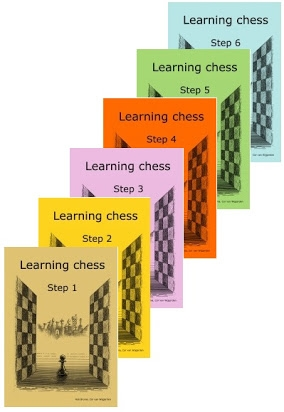
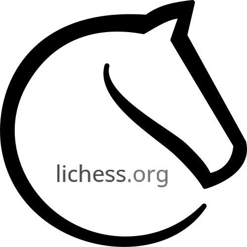
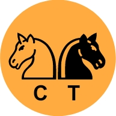

|
Livrets d'exercices recommandés : (méthode par étapes)  |
|
|
Sites recommandés :


() |
||
Projets : appels à candidatures et avancements
|
Thématiques, philosophies
Derniers documents mis en ligne
Intéressé pour participer à un projet ou une thématique ? Une idée à soumettre ? contact@chess-teaching.com Comment contribuer au projet ? |